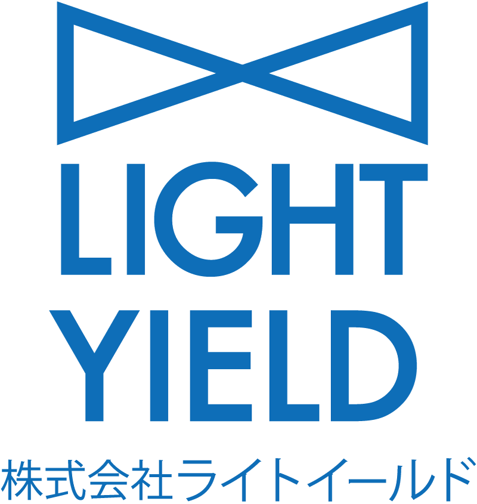
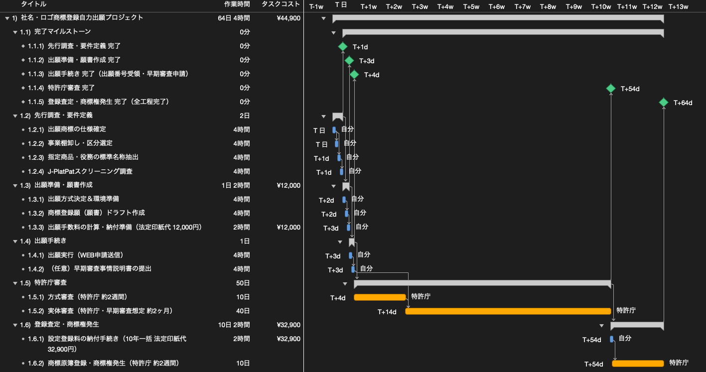

社名・ロゴの商標登録出願を行うWBSを作ってみた
今回は「WBSで覗いてみた」シリーズとして、「社名・ロゴの商標登録出願を行うWBS」を作成しました。
株式会社ライトイールドの社名およびコーポレートロゴを題材に、特許庁への出願から商標権発生までの工程をWBSに分解し、必要な作業タスクや所要期間、費用構造について検証していきます。
1. 出願対象の商標と前提条件
まずは、今回出願の対象とする商標と、プロジェクトの前提条件を整理します。
商標法上、出願対象には文字のみを指定する「文字商標」と、マークや図形を含む「図形商標・結合商標」が存在します。今回は、ライトイールドの社名およびコーポレートロゴを題材とします。

図1は、シンボルマークと英字表記「LIGHT YIELD」、日本語表記「株式会社ライトイールド」を組み合わせたロゴです。実際の出願にあたっては、文字商標として「ライトイールド」「lightyield」を登録する形態と、ロゴ画像そのものを登録する形態が考えられます。
今回は、外部委託を行わず自分1人で特許庁のWEB申請システムから電子出願を行う想定とし、対象区分はライトイールドの主力事業である「第42類（ソフトウェア開発等）」の1区分としました。また、すでに使用している商標であることを前提に「早期審査制度」を活用し、登録料は10年分を一括納付するモデルとしています。
2. WBSを作成する
前提条件をもとに、先行調査から商標原簿登録までの全作業を洗い出し、タスク間の依存関係とリソースを定義したガントチャートを作成しました。

図2のガントチャートから、全体の工程とタイムラインの特徴が把握できます。
プロジェクト全体の所要期間は「64日4時間（実日数で約3ヶ月強）」となっています。このうち、自分自身が手を動かす実作業の工数は合計で「4日2時間（34時間）」程度にとどまります。
スケジュールの大部分（約50営業日＝約2ヶ月強）は、特許庁による審査待ち時間（外部リードタイム）が占めています。このように、「作業者の工数」と「外部の待機期間」が明確に分離されている点が、官公庁手続き系プロジェクトの典型的な特徴です。
また、全体の進捗を客観的に管理できるよう、各フェーズの節目に完了マイルストーン（先行調査完了、願書作成完了、出願完了、特許庁審査完了、商標権発生完了）を設定しています。
3. プロジェクトにかかる費用構造
本WBSにおける費用の構造について整理します。
外部の専門家（弁理士）を介さず自社で直接手続きを行う場合、発生する金銭的コストは特許庁への「法定費用（特許印紙代）」のみとなります。
| 費目 | 内訳・根拠 | 金額 |
|---|---|---|
| 出願手数料（特許庁印紙代） | 1区分（基本料3,400円 ＋ 8,600円×1区分） | 12,000円 |
| 設定登録料（特許庁印紙代） | 1区分・10年一括納付（32,900円×1区分） | 32,900円 |
| 専門家報酬（代理人手数料） | 自社による直接出願（外部委託なし） | 0円 |
| 合計法定費用 | 1区分・10年間有効 | 44,900円 |
一般的に弁理士や特許事務所へ依頼した場合は、事前調査手数料、出願手数料、登録成功報酬などが加算され、1区分あたり概ね15万円〜22万円程度の総額となることが一般的です。
自社で手続きを行うことで金銭的な支出を法定実費の44,900円のみに抑えられる一方、出願商標の仕様確定や指定役務の標準名称選定、先行調査などに約34時間（約4.25人日）の社内リソースを投入することになります。自社の稼働状況や調査・書類作成の負担と、外部費用の削減幅を比較して方針を選択することが合理的です。
終わりに
今回は、自社の社名およびロゴマークを題材に、特許庁への商標登録出願プロジェクトをWBSに分解しました。
商標登録は法的な手続きであるため難解な印象を持たれやすいですが、作業を分解してみると、出願人側が対応すべき実作業は「調査」「願書作成」「納付」の約34時間程度であり、全体工程の大半は特許庁の審査待ち時間であることが明確になります。
区分や指定役務を特許庁の公式な標準名称から選定しておくこと、そして事前調査を適切に行うことで、手戻りを防ぎ、スムーズな権利化を進めることが可能です。
社名やブランドロゴの権利保護を検討する際の参考になれば幸いです。
なお、プロジェクト計画の基礎となるWBSの作り方や平準化の考え方について詳しく知りたい方は、「WBSの勘所」や「ガントチャートの決め手は平準化」もぜひ合わせてご覧ください。
最後までお読みいただきありがとうございました。